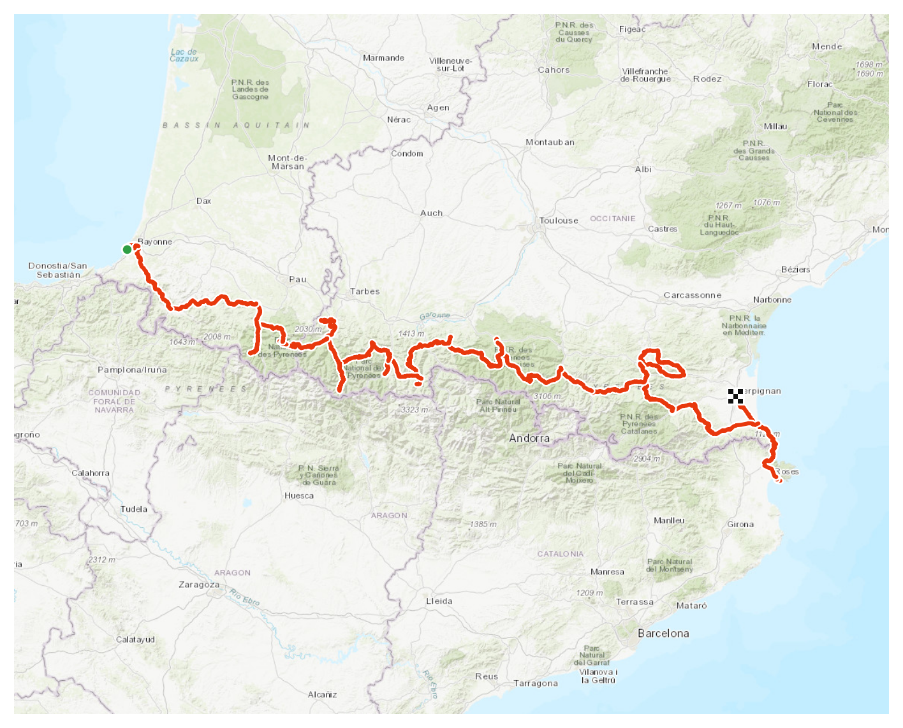
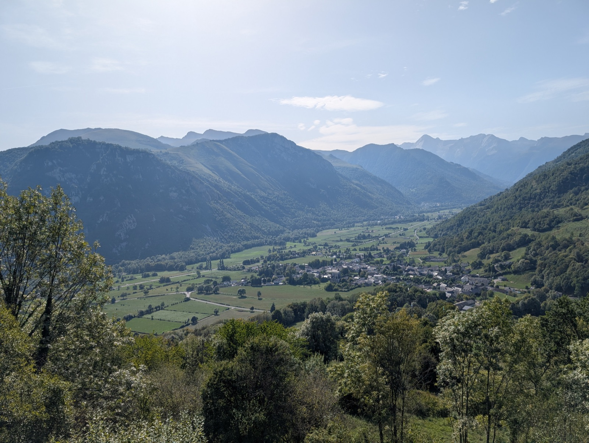
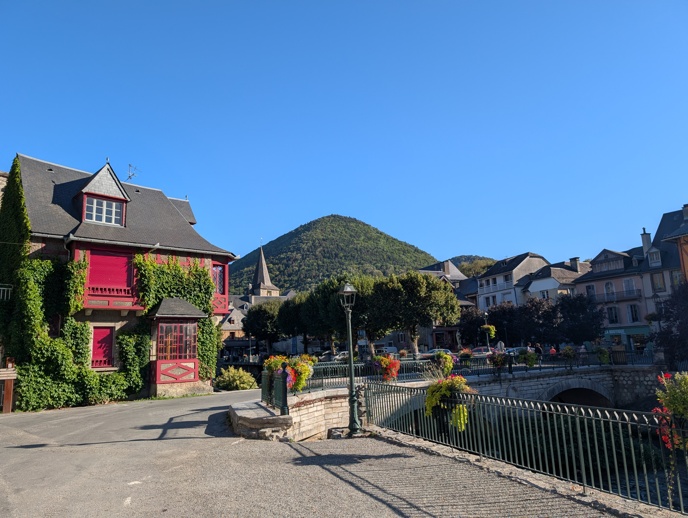
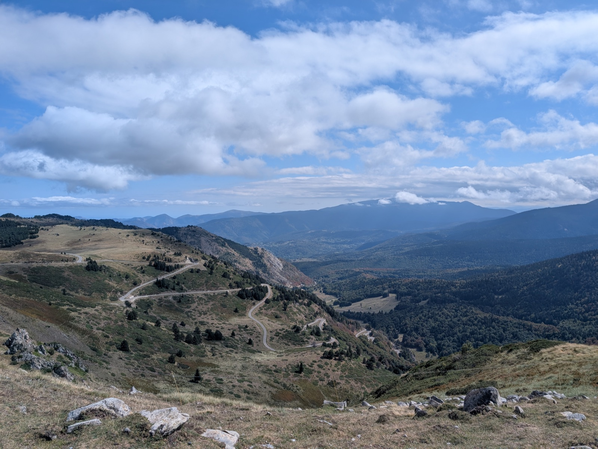
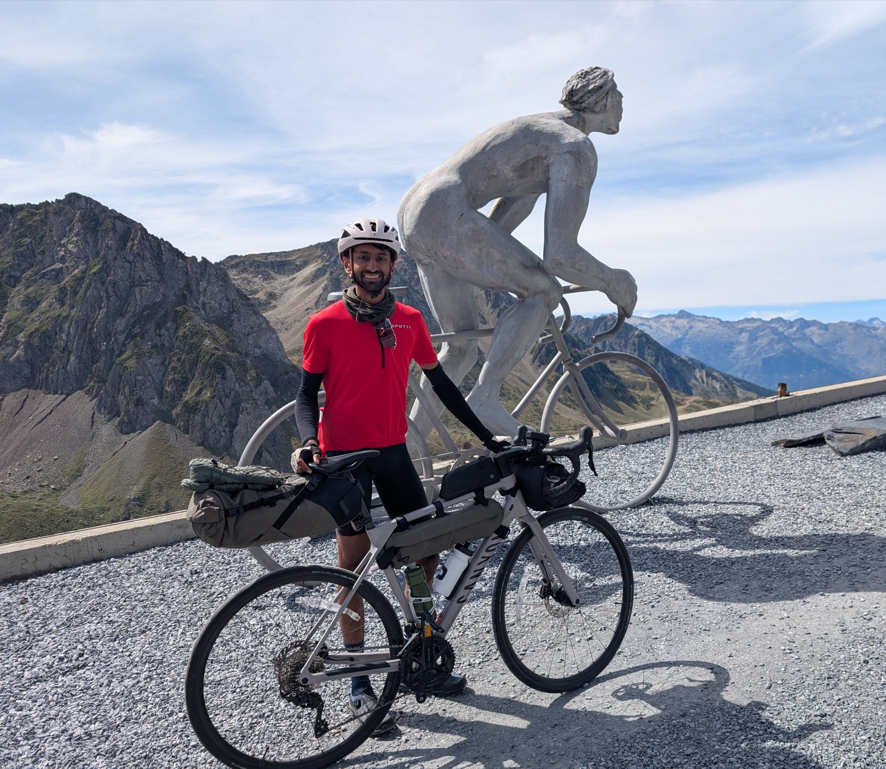
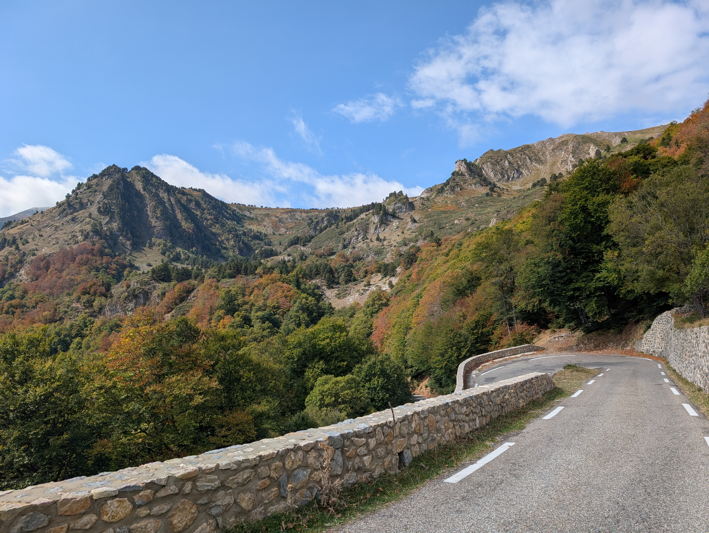
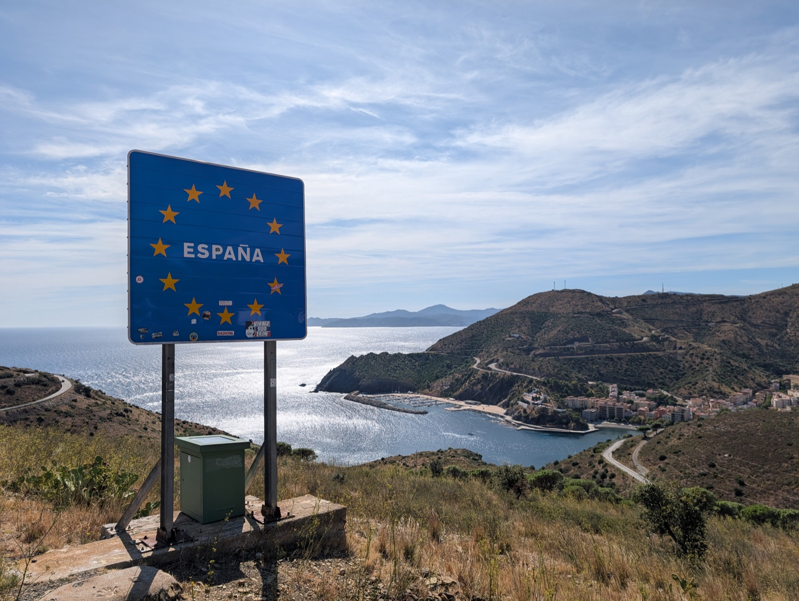
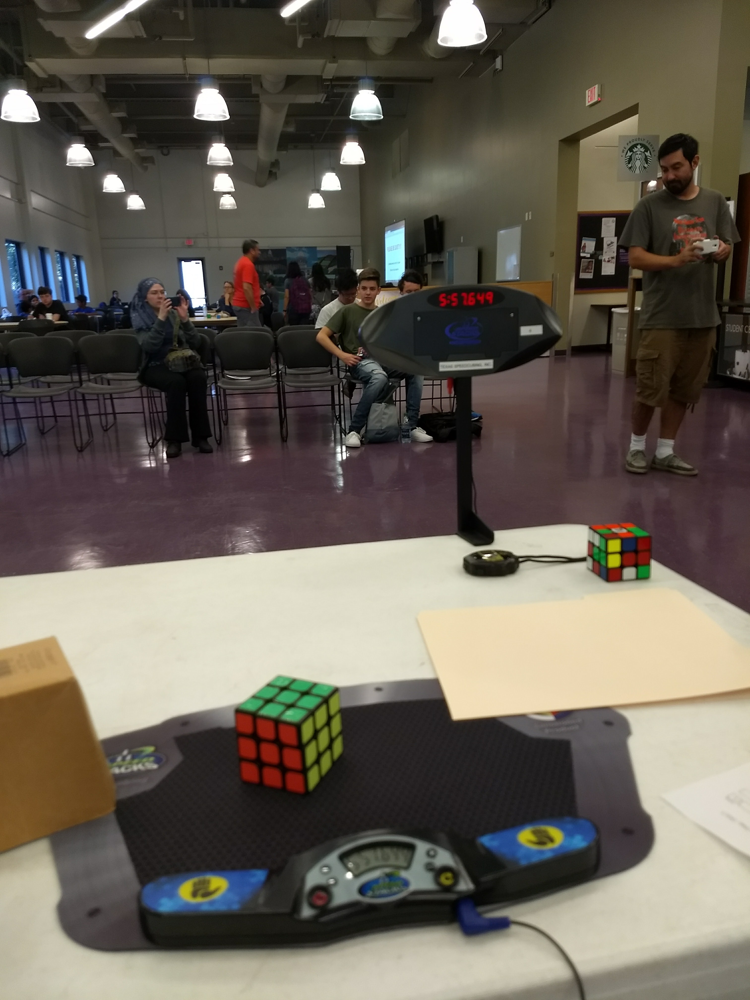
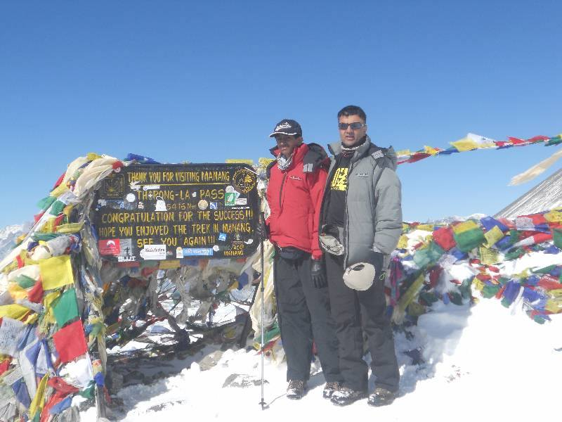
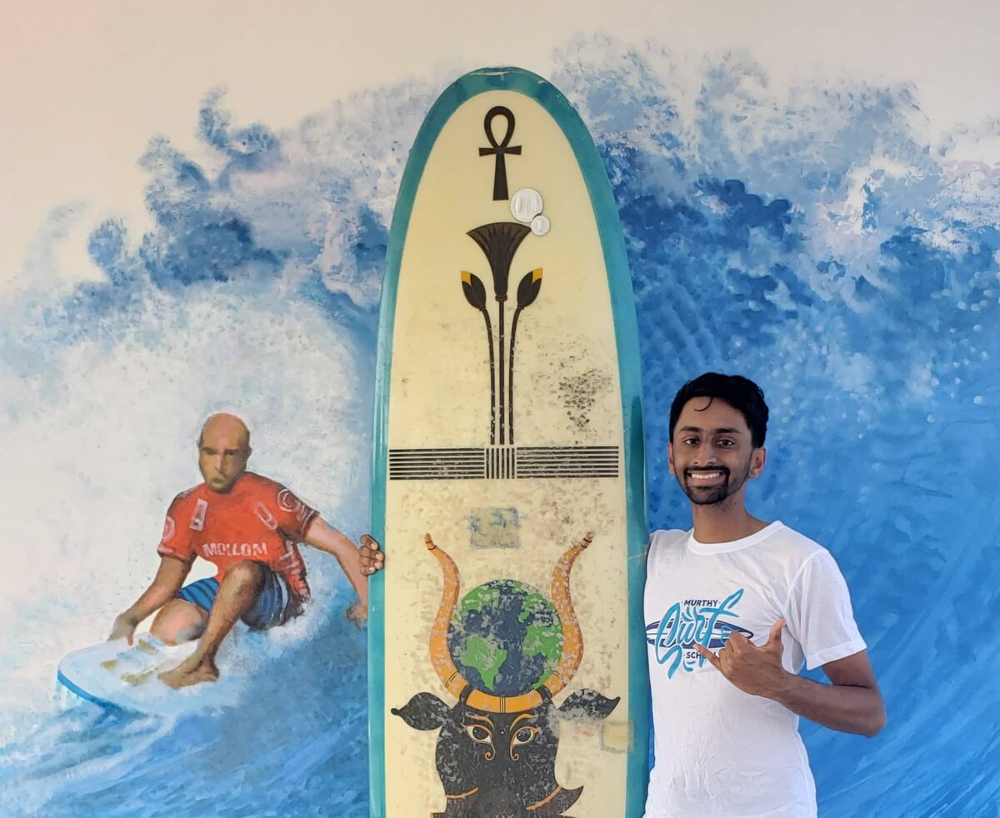

Atlantic -> Mediterrean across the French/Spanish Pyrenees22 days, 1200+ km distance, 23000+ m total elevation and 19+ mountain passes







Atlantic -> Mediterrean across the French/Spanish Pyrenees22 days, 1200+ km distance, 23000+ m total elevation and 19+ mountain passes

Blind solves from a compOfficial profile; never broke the 10s barrier on 3x3 :(


Guitar coversRock, and a lot of oldie 70s prog all the way

Thorung La Pass @ 5400 m10 day hike (120 km) across Annapurna circuit

Surf in Kovalam